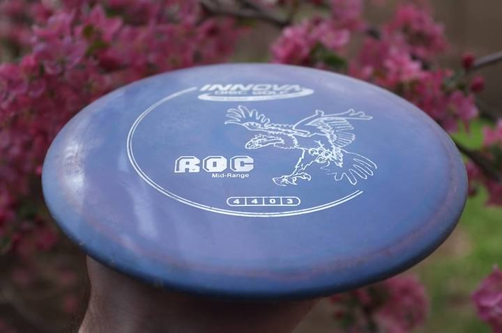

And more specifically, the prettiest disc ever made, my Purple/Pink Swirled DX Roc:
If you could only own one disc, this is probably the one to get. It's a slightly overstable mid-range disc, but the more you throw it, the more you realize you can make it do pretty much everything you want. Lots of players keep three or four of these in their bag, with differing levels of wear. The more beat-in your DX Roc gets, the straighter it will fly. And eventually, after it hits tons of trees and gets super beat-in, when you throw it flat, it'll glide gently to the right and finish dead straight.